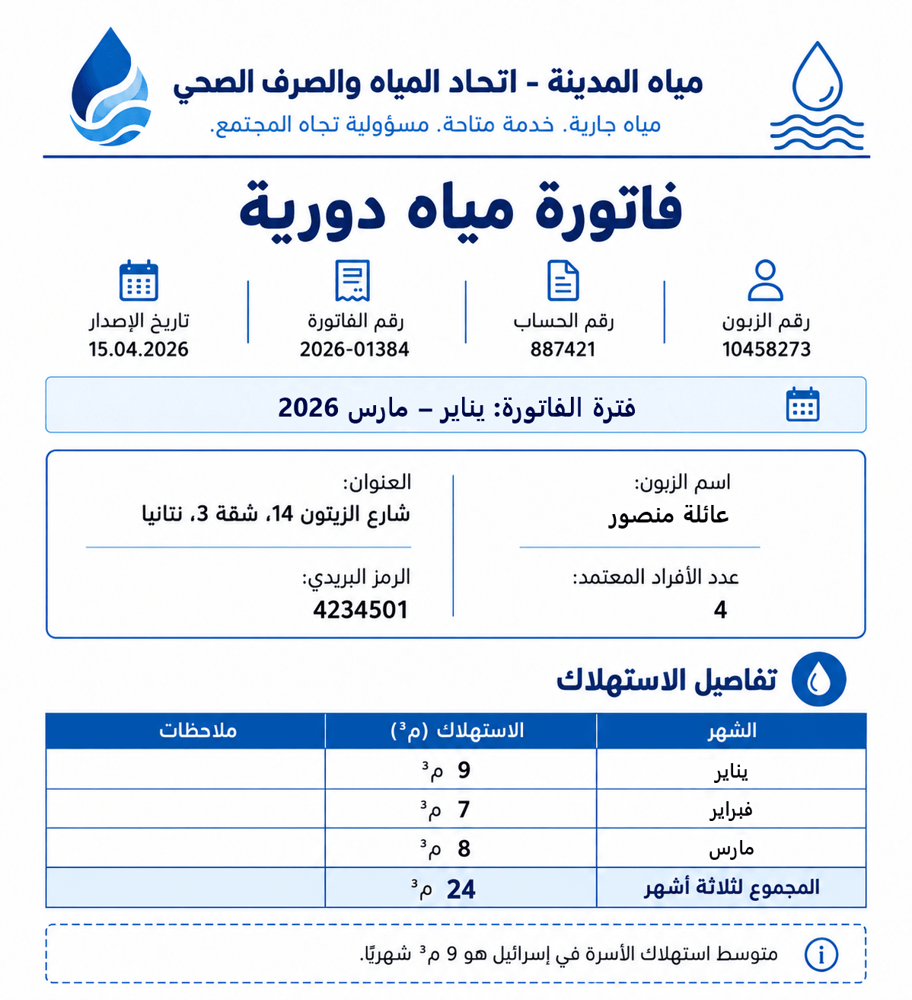

كلّ الاحترام!
تحتوي على 4 بنود. عليكم النجاح في 3 على الأقل.
تعرّفوا على
بحسب ادعائهم، استهلكت العائلة بين يناير ومارس كمية مياه أقل من متوسط استهلاك العائلة في إسرائيل.
هل عائلة منصور على حق؟

أ. إليكم فاتورة المياه الدورية لعائلة منصور.
انقروا على جميع النقاط في الوثيقة،
التي تعرض بيانات تُمثّل أدلةً يمكنها دعم ادعاء العائلة (ادعاء العائلة: "في الأشهر من يناير حتى مارس، استهلكت العائلة مياهًا أقل من عائلة متوسطة في إسرائيل").
ب. حددوا الشهر الذي استهلكت فيه عائلة منصور
أكبر كمية من المياه،
وأكملوا الجملة:
ج. البيانات الواردة في فاتورة المياه تم قياسها بجهاز قياس.
في العلوم، من المعتاد أن تُبنى الحجة على بيانات تم قياسها في تجربة أو ملاحظة،
وليس على رأي أو خبرة شخصية.
لماذا؟
د. بنوا حجة علمية تفحص ادعاء عائلة منصور.
اسحبوا البطاقات إلى المكان الصحيح.